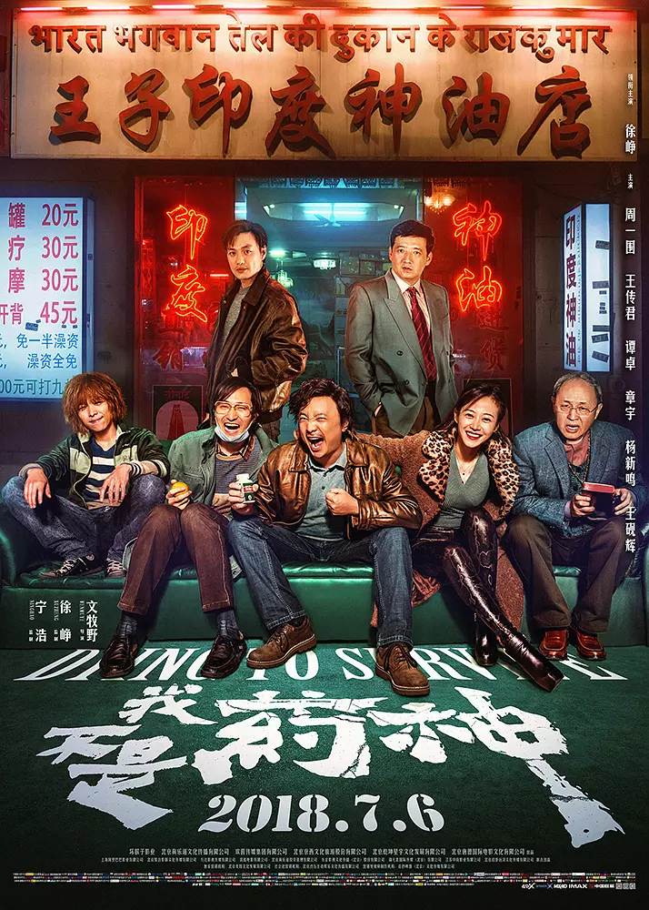

导演：文牧野
编剧：韩家女 / 钟伟 / 文牧野
主演：徐峥 / 王传君 / 周一围 / 谭卓 / 章宇
类型：剧情 / 喜剧
制片国家/地区：中国大陆
语言：汉语普通话 / 上海话 / 英语 / 印地语
上映日期：2018-07-05（中国大陆）
片长：117 分钟
普通中年男子程勇经营着一家保健品店，日子过得失意潦倒。一次偶然的机会，他从印度代购回一种治疗慢粒白血病的仿制药，并以远低于正版药的价格卖给病友，从此被病友们称为"药神"。随着生意越做越大，程勇一方面要躲避警察的追查，另一方面还要应付正版药厂的压力。在法与情、利与义的夹缝中，目睹了无数病人求生的挣扎之后，他必须做出自己的选择。